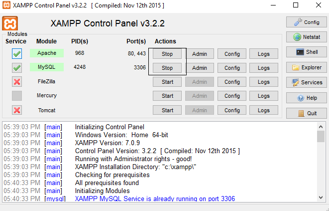
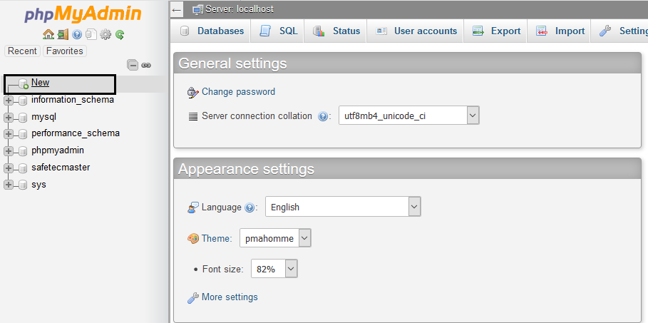

-
1. Crear espacio de trabajo arrow_drop_down
-
Instalar Xampp en el computador:
https://www.apachefriends.org/es/index.html
Utilizar la ruta predeterminada: C:\xampp -
Abrir la cónsola de xampp con permisos de administrador
-
Instalar los Apache y MySql como servicios de windows:
Hacer Clic en los botones de servicio correspondientes -
Iniciar los Apache y MySql como servicios de windows:

Hacer Clic en los botones Start del servicio correspondientes
-
-
2. Configurar PHPMyadmin arrow_drop_down
-
Abrir la cónsola de php myadmin desde el epxplorador:
http://localhost/phpmyadmin
-
Iniciar sesión con el nombre y usuario
user: root
password (en blanco)
-
Crear una nueva base de datos

Hacer Clic en la opción "NEW" -
Crear base de datos con el nombre supermercadosmax:
-
-
3. Utilizar asistente de Exportación/Importación de Duplicator.php arrow_drop_down
-
Descomprimir los archivos supermercadosmax_cf2a4b83a85c0cff7807180416123917_archive e installer.php dentro de la carpeta del proyecto:
C:\xampp\htdocs\supermercadosmax
-
En el explorador navegar hasta la carpeta del proyecto y ejecutar el archivo installer.php
http://localhost/supermercadosmax/installer.phpY hacer click en
NextY eperar que finalice el proceso -
En el paso 2, se debe agregar la información de configuración del servidor
- Action: Connect and Remove all data
- HOST: localhost
- Database: supermercadosmax
- user: root
- password:
-
Presionar el botón test database y esperar la respuesta del servidor. Si la respuesta es correcta presionar NEXT
Aceptar el mensaje de confirmación
Si se genera un error verificar los pasos anteriores -
En el paso 3 abrir la pestañas:
-
New Settings
en la opción URLCambiar el protocolo de conexión http:// por https://
-
Opciones / New Admin Account
cambiar el nombre del usuario administrador por el de tu preferencia. En este ejemplo se utilizará
Usuariomaster
Contraseña123456
-
Opciones / Scan Options
en la opción Site URLCambiar el protocolo de conexión http:// por https://
Y hacer click en
NextY eperar que finalice el proceso -
-
En el paso 4 verificar que no hayan errores de instalación
Y hacer click en
Site loginy automáticamente será redireccionado a la página de inicio de sesión del sitio web -
En la página de inicio de sesión utilizar el nombre de usuario y contraseña especificados en el paso 3.1
-
Una vez iniciada la sesión serás redirigido al dashboard y deberás eliminar los archivos de instalación
-
La tienda virtual está lista para ser utilizada.
Ir a la tienda
-
-
4. Errores comunes arrow_drop_down
-
1. No se muestran las ofertas diarias en el slider principal arrow_drop_down
Causa:
No existe una categoría de productos con slug definido como ofertas-diarias o no hay productos asignados a esa categoría.
-
2. No se muestran las ofertas semanales en la página principal arrow_drop_down
-
3. No se muestran las ofertas del mes en la página principal arrow_drop_down
Causa:
-
No se ha seleccionado la categoría ofertas semanales
-
No se hay productos asignados a la categoría ofertas semanales
-
No se ha seleccionaod la categoría de Ofertas Diárias en la sección en la Sección Slider de productos del personalizador

-
-
4. Error en dashboard del plugin NexttendSocialLoginerrorURI arrow_drop_down
-
5. Error de inicio de sesión con cuenta Facebook arrow_drop_down

Causa:
La página utiliza protocolo http en vez de protocolo https.
Solución
Se debe cambiar la URL del sitio web en ajustes para forzar Ingresar al sitio web con protocolo https:
Ver Solución -
6. Error de inicio de sesión con cuenta Google+ arrow_drop_down

Causa:
La página utiliza protocolo http en vez de protocolo https.
Solución
Se debe cambiar la URL del sitio web en ajustes para forzar Ingresar al sitio web con protocolo https:
Ver Solución -
7. Error al enviar emails desde el formulario de contacto arrow_drop_down
-
8. Finalizar compras arrow_drop_down
Una vez presionado el botón finalizar compras no refrescar el navegador hasta que el proceso termine. Este proceso puede durar unos minutos.
-

Para que funcionen las API de google y facebook el proyecto debe crearse en la carpeta wordpress o supermercadosmax
{kind=link}
{kind=link}
{kind=link}
{kind=link}
{kind=link}
{kind=link}
{kind=link}
{kind=link}
{kind=link}
{kind=link}
{kind=link}
{kind=link}
{kind=link}
{kind=link}
{kind=link}
{kind=link}
{kind=link}